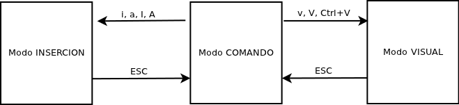

VIM¶

Introducción¶
Este pequeño tutorial pretende ser una introducción y a la vez una referencia rápida al editor Vim (Vi IMproved) tanto para aquellos que quieren empezar a utilizarlo como para aquellos que ya lo utilizan de una forma básica (abrir fichero, modificar, guardar y salir) y desean ampliar sus conocimientos sobre este fantástico editor.
El tutorial puede ser algo largo, pero está organizado de forma que puedas empezar a leerlo desde el principio y parar en el momento en que lo que se explica está por encima de tus necesidades. Es más, puedes dejarlo en un punto concreto que cubra tus necesidades y volver a leerlo pasado un tiempo, y volver a aprender cosas nuevas. La idea es que no sea necesario leerlo entero para que te sea útil.
Si eres novato y te abruma ver tantas combinaciones de teclado o explicaciones, tómatelo con calma. Lee un capítulo, y prueba todos los comandos u opciones editando un fichero de texto. Aplíca esos comandos cada vez que puedas, utilizando vim para hacer tus tareas de edición de textos, y verás como pasado un tiempo, lo que leíste la anterior vez te parece básico y puedes avanzar algo más en el tutorial.
La parte inicial del tutorial contiene bastante texto, porque se corresponde con el momento en que no estamos familiarizados con los comandos de Vim y las explicaciones necesitan ser más profundas, pero conforme avanzamos en el texto, las descripciones serán más someras, ya que si hemos llegado hasta allí, directamente estaremos asimilando los comandos y conceptos sin necesidad de explicaciones complejas.
Para seguir el tutorial simplemente os recomiendo que tengáis instalada alguna versión nueva de Vim (que podéis descargar en http://www.vim.org o bien utilizando el sistema de paquetes de vuestra distribución Linux) y sobre todo que tengáis ganas de aprender a utilizarlo. Además del típico VIM de línea de comandos, existen compilaciones de Vim con un Interfaz Gráfico (GUI), como gvim o la propia de Windows. Y es que recordad que existen versiones de Vim no sólo para UNIX / Linux, sino también para Windows, por ejemplo, de forma que las ventajas de utilizar Vim las podéis aprovechar también en ordenadores Windows que os obliguen a utilizar en Universidades, o en el trabajo, por ejemplo. Así que armados con Vim instalado para nuestro sistema operativo favorito y algo de tiempo para leer, entremos en materia.
Funcionamiento básico de Vim¶
Vim es un editor de textos, en contraposición a lo que se conoce como procesador de textos.
En un procesador de textos es muy importante el formato del texto: cursivas, negritas, títulos, centrado o justificado, color y tamaño de la fuente, etc.
Vim, en cambio, se utiliza para editar texto. Lo importante no es el formato del texto sino el texto en sí mismo. Así, Vim se utiliza para programar, para escribir emails, para editar textos, código HTML, ficheros de configuración del sistema, etc.
Los procesadores de texto están centrados en ofrecer muchas cosas para el formateado del documento, mientras que Vim está pensado para facilitar la labor de introducción y edición del texto. No es muy útil editar un fichero de configuración o programar con LibreOffice o Word al igual que no tiene mucho sentido utilizar Vim para editar un documento donde lo que prima es el formato (pese a que gracias al lenguaje de programación LATEX, esto se puede hacer en Vim).
Por eso, cuando quieras programar, editar ficheros de configuración, o simplemente, hacer tu trabajo con texto de una forma más rápida, lo mejor es utilizar un editor de texto. Y como veremos, Vim es especial para hacer esta labor, por encima de muchos otros editores.
El editor Vim es una evolución del clásico editor VI. VI es un editor que encontraremos presente en casi el 100% de los sistemas UNIX (y si no está presente por defecto se puede instalar), por lo que conocer su uso es prácticamente una obligación para los Administradores de Sistemas. Por suerte, Vim se diseñó heredando casi todas las teclas y opciones de VI, de modo que siguiendo este tutorial nos aseguramos los conocimientos necesarios para manejar VI a nivel básico y medio. Podéis pensar en VIM como un VI mejorado, al cual podréis aplicar la mayoría de conocimientos de movimiento y edición que veremos aquí.
Instalación y ejecución de Vim¶
Si usas una plataforma Linux, lo más probable es que Vim ya esté instalado en tu sistema. En cualquier caso, puedes instalarlo con:
| Variante | Sistema | Comando |
|---|---|---|
| Vim (modo texto) | CentOS / RedHat / Fedora | yum install vim-enhanced vim-minimal |
| gVim (modo gráfico) | CentOS / RedHat / Fedora | yum install vim-X11 |
| Vim (modo texto) | Ubuntu / Debian / Mint | apt-get install vim-nox |
| gVim (modo gráfico) | Ubuntu / Debian / Mint | apt-get install vim-gtk |
He separado la instalación de paquetes modo texto y modo gráfico por si alguien desea instalar śolo una de las 2 variantes, pero lo normal es tener ambas instaladas. Por ejemplo, podemos usar vim en terminales de texto para editar ficheros de configuración (cuando cambiamos a root en una consola) y gvim en proyectos de programación.
Para lanzar vim, basta con ejecutar vim en una terminal de texto (lo que creará un buffer vacío en vim), o bien vim fichero (que partirá con el contenido del fichero en el buffer).
También podemos irnos con el cursor directamente a una línea N contra del fichero editado si hacemos vim +NUMERO fichero (especialmente util si estamos editando un fichero tras un error de compilación de un programa, por ejemplo, y conocemos el número de línea del error).
Una vez dentro de Vim, podemos salir sin grabar el contenido ejecutando en modo comando :q! y grabando con :x!. En breve veremos qué quiere decir eso de "en modo comando".
Modo inserción y modo comando¶
Como muchos ya sabéis, a la hora de editar textos, Vim trabaja en varios modos: modo comando, modo inserción, modo visual... Se dice pues que es un editor modal (con varios modos de trabajo). En todo momento sabremos en cuál de los modos estamos gracias a la información que aparece en la barra de estado del editor (la última línea de la pantalla).
Los 2 principales modos de trabajo son modo comando y modo inserción. Para selección de texto con los cursores, también disponemos del modo visual.
En modo comando (el modo en que está Vim tras ejecutarlo) las teclas que pulsamos, en lugar de aparecer escritas en el documento, son interpretadas por Vim como comandos y nos permiten realizar acciones como grabar, salir, copiar, pegar, etc. Por ejemplo, pulsando ZZ en modo comando, no vamos a escribir dos zetas mayúsculas en el documento, sino que vamos a salir de vim grabando el fichero que estamos editando.
El modo inserción sí que nos permite introducir caracteres en el fichero, en la posición actual del cursor, al estilo de los editores básicos a los que estamos acostumbrados. Estando en modo inserción, si pulsamos ZZ, se insertarán dos zetas mayúsculas en la posición actual del cursor, tal y como cabría esperar en un editor normal. Cuando estamos en modo inserción aparece la cadena –INSERTAR– en la barra de estado del editor (la última línea de pantalla).
Para pasar al modo inserción desde el modo comando se utiliza la tecla/comando i, y para volver al modo comando se utiliza la tecla ESC.
La siguiente imagen ilustra los diferentes modos y las teclas que cambian entre ellos:

El hecho de disponer de 3 modos y tener que pasar de uno a otro puede parecer algo confuso o incluso un engorro, pero es justo la mejor baza de vim; es lo que le proporciona su potencia, lo que los demás editores no pueden hacer: aplicar comandos al texto. Es mucho más cómodo borrar una línea completa con el comando dd en vim que seleccionar la línea con el teclado o ratón y borrarla con la tecla DEL o SUPR en otro editor.
Alguien podría decir: """bueno, seguro que cualquier otro editor también tiene un atajo de teclado para borrar la línea actual completa."""
Bien, imaginemos que la tiene (suele ser CTRL+Y), pero ... ¿y si quieres borrar las 30 líneas siguientes a la del cursor (incluída esta)? ¿Vas a pulsar 30 veces el atajo de teclado? ¿Vas a seleccionar con el ratón o el teclado las 30 líneas? ¿Y si te digo que en modo comando de Vim, lo puedes hacer simplemente tecleando 30dd?
Y es que 30dd para vim significa 30 x dd, o sea, ejecuta 30 veces el comando dd, es decir, borra 30 líneas.
Esto sólo se puede hacer gracias a la potencia del modo comando.
Cuando se es un novato en vim, y uno está acostumbrado a otros editores que cree más potentes, puede pensar que vim es un editor arcaico y obsoleto sólo por el hecho de que se utiliza integramente con el teclado y es modal.
La realidad es toda la contraria: es precisamente eso lo que permite que Vim sea mucho más potente que el resto de editores.
Vim es muy muy muy potente, no es un simple editor. La clave de Vim es estar el mayor tiempo que se pueda en modo comando, pasando a modo inserción sólo cuando se requiera introducir texto en el documento. Cuando estemos escribiendo emails o documentos de texto es muy probable que estemos casi todo el tiempo en modo inserción (a menos que queramos corregir algo que hayamos escrito), pero programando o editando ficheros de configuración ocurrirá justo lo contrario. Los atajos de teclado del modo comando se hacen algo complicados de entender al principio, pero tras el uso continuado de Vim se desarrolla en nuestra mente la forma de utilizar esos comandos de forma totalmente intuitiva, sin pararnos a pensar en ellos.
Cuando empieza a utilizarse vim sólo se conoce el funcionamiento básico, pero con el tiempo uno comienza a descubrir toda la potencia de este genial editor y empieza a cambiar la concepción de tiene de él: Vim no es sólo un editor, es una forma de vida en UNIX.
El fichero .vimrc¶
En vim podemos modificar muchos parámetros del editor mientras editamos los ficheros. Por ejemplo, tecleando en modo comando :set number (dos puntos, set number, intro), Vim activará la numeración de líneas (no dentro del fichero en sí, sino visualmente), algo que puede ser útil para programar.
Otro ejemplo, tecleando :syntax on, activaremos para el fichero actual el coloreado de sintaxis, es decir, que las palabras especiales que el editor entienda como que tienen un significado concreto aparecerán en diferentes colores. Si estamos programando en C, por ejemplo, las palabras claves aparecerán de un color, las cadenas de otro, etc (algo realmente útil a la hora de programar).
Pues bien, cualquier tipo de opción, macro, comando o función que vim entienda puede ser incluída en el fichero .vimrc en el directorio $HOME de nuestro usuario (o en un fichero _vimrc en el directorio de instalación de Vim o en el padre del Escritorio del usuario en Windows) de forma que se aplique como opción por defecto cuando lancemos Vim. Así, podemos crear un fichero .vimrc (por defecto normalmente no existirá), que contenga algo como lo siguiente:
set nocompatible
set number
set ruler
syntax on
Esto hará que siempre que editemos un fichero, aparezca numeración de líneas (set number), un indicador de fila y columna en la barra de estado (set ruler) y resaltado de sintaxis (si está definida para el tipo de fichero que estamos editando) activado. Es algo así como el fichero de opciones de vim para nuestro usuario (y sólo para nuestro usuario). Existe un fichero de opciones general /etc/vimrc (normalmente) cuyos cambios afectan a todos los usuarios cuando arrancan vim, pero lo que incluyamos en nuestro .vimrc sólo afectará a vim cuando lo ejecutemos con nuestro usuario del sistema.
Así, podemos utilizar dicho fichero para indicar aquellas configuraciones con las que estemos más cómodos, de forma que podamos adaptar vim a nuestras necesidades. Es normal que en estos momentos iniciales no conozcamos vim lo suficiente como para hacernos un .vimrc decente, pero para empezar os recomiendo algo como lo que sigue:
" Fichero .vimrc de mi usuario
" Los comentarios se ponen con comillas dobles
set nobackup
set ruler
" nocompatible permite funciones que VI no soporta
set nocompatible
set tabstop=4
set sw=4
set expandtab
set vb
set noerrorbells
syntax on
Las posibilidades del fichero .vimrc son muy grandes, ya que no sólo soporta comandos simples de configuración sino que tiene un lenguaje propio que nos permite hacer casi cualquier tipo de cosa.
Poco a poco podréis ampliar este fichero con más opciones, macros, etc, que iremos viendo a lo largo del tutorial. De momento os recomiendo que creéis uno con, como mínimo, las opciones que acabamos de mostrar en el ejemplo anterior.
Comandos básicos: movimiento, inserción y borrado¶
Un primer contacto con Vim puede ser tan simple como editar un fichero con vim fichero, pasar a modo inserción pulsando i (i minúscula), moverse por el documento, cambiar e introducir texto, volver a modo comando (pulsando ESC), y salir del editor grabando los cambios en el fichero pulsando ZZ (2 zetas mayúsculas) o con :x!. Como toma de contacto inicial es suficiente y puede servir para perder el miedo al hecho de que Vim tenga 2 modos principales de funcionamiento (comando e inserción).
Lo siguiente que debemos hacer con nuestro editor es aprender a movernos por el texto. Supongamos que hemos creado/editado un documento con Vim, y tenemos que movernos por él (y añadir/cambiar cosas). Como siempre, en modo inserción (si tenemos bien configurada la variable $TERM del sistema) podremos movernos con las teclas clásicas de los demás editores: cursores, Inicio, Fin, RePág, AvPág, etc.
No obstante, la potencia real de Vim la encontramos con las posibilidades de movimiento definidas en el modo comando. Aparte de que en modo inserción estamos muy limitados (movimiento en las 4 direcciones, principio y fin de línea, y anterior y siguiente página), algunas combinaciones de teclado no tienen por qué funcionar en ciertas máquinas, Sistemas Operativos o configuraciones de teclado (en Solaris, AIX, HPUX, o utilizando telnet/ssh contra otra máquina). El movimiento en modo comando es mucho más estándar (al utilizar teclas básicas del teclado y no teclas extendidas) y nos permite mucho más juego.
La regla general de Vim es moverse y trabajar siempre en modo comando y sólo pasar a modo inserción para introducir, borrar o modificar texto de nuestro documento (volviendo a modo comando al acabar el cambio), ya que el modo comando es el lugar donde podremos usar todas las opciones que en otros editores no se pueden realizar.
Veamos los diferentes comandos básicos de movimiento, inserción y borrado (siempre en modo comando):
| Comando | Significado |
|---|---|
| h | Mover el cursor a la izquierda. |
| j | Mover el cursor hacia abajo. |
| k | Mover el cursor hacia arriba. |
| l | Mover el cursor hacia la derecha. |
| i | Insertar texto en la posición actual del cursor (Insert), pasando a Modo Inserción. Se permanece en modo inserción hasta que se sale explícitamente de él. |
| ESC | Salir del modo inserción y volver a modo comando. En modo comando, permite cancelar muchos de los comandos que se están ejecutando. |
| x | Borrar el caracter bajo el cursor (equivale a la tecla Del/Supr). |
| X | Borrar el caracter a la izquierda del cursor (equivale a la tecla Borrar/Backspace). |
| J | Juntar la línea actual con la siguiente (Join), eliminando el retorno de carro entre ellas. |
| u | Deshacer la última acción (Undo). Si lo pulsamos más veces desharemos acciones anteriores. |
| CTRL+R | Rehacer la última acción (Redo). Si lo pulsamos más veces reharemos acciones posteriores deshechas. |
| a | Insertar texto en la siguiente posición tras el cursor (Append). Es similar a i, salvo que el texto no se inserta en la posición actual del cursor sino a su derecha. |
| A | Poner el cursor al final de la línea y pasar a modo inserción (añadir texto al final). |
| o | Crear una línea vacía, en blanco, bajo la línea actual, y pasar a modo inserción con el cursor posicionado en dicha línea. Es mucho más cómodo que (como en otros editores) tener que pulsar FIN y ENTER para crear una línea en blanco. |
| O | Crear una línea vacía, en blanco, sobre la línea actual. Sería el equivalente en otros editores a ARRIBA, ARRIBA, FIN, ENTER. |
| dd | Borrar la línea actual (sobre la que está el cursor). |
| D | Borrar desde la posición actual del cursor hasta el final de la línea. |
Como podéis ver, la existencia de ciertos comandos (como o, O, o dd) está pensada para evitar la mayor cantidad de pulsaciones de teclas/ratón posible. Borrar líneas con dd es mucho más rápido y sencillo que llevar la mano al ratón o a SHIFT+cursores en otros editores, e induce a muchos menos errores.
También, pulsar J (jota mayúscula) para juntar (Join) una línea con la línea siguiente es mucho más rápido que bajar a la siguiente línea, irse al principio de la misma, y pulsar borrar para subirla a la línea anterior.
Counts o repetidores¶
En la mayoría de comandos de Vim podemos añadir counts, que es como se conoce a los repetidores del comando. El count es un número que se teclea antes del comando para que se repita varias veces. Unido a la potencia del modo comando nos da mucho juego para la edición. Veamos unos cuantos ejemplos:
| Comando | Significado |
|---|---|
| 10dd | Repetir 10 veces el comando dd, es decir borrar 10 líneas empezando desde la línea actual. Es el equivalente a teclear manualmente 10 veces dd, y mucho más rápido que seleccionar 10 líneas a mano con ratón o cursores. |
| 5x | Repetir 5 veces el comando x, es decir, borrar 5 caracteres empezando desde el carácter actual. Equivale a pulsar manualmente 5 veces el comando x. |
| 60i- |
Insertar 60 guiones consecutivos. Este comando se teclea en modo comando pulsando 6, 0, i, guión, y pulsando la tecla ESCAPE y luego pulsar ENTER para validar el comando. Al hacerlo, estamos diciendo que se repita 60 veces la secuencia i guión ESCAPE, es decir, pasar a modo inserción, escribir un guión, y volver al modo comando pulsando ESCAPE. El 60 que hay delante lo repite 60 veces, con lo cual tenemos 60 guiones en pantalla. ¿No es mucho más cómodo al programar, para introducir separadores de comentarios, que pulsar el guión 60 veces o durante varios segundos mientras miramos la columna en la que estamos? |
| 10iHola |
(pulsar ESC y ENTER como las teclas ESC y ENTER, no tecleando la cadena) Aparece la palabra Hola 10 veces en pantalla, cada vez en una línea propia. Su significado, al igual que en el ejemplo anterior, sería repite 10 veces la secuencia i, Hola, ENTER, ESC, que pasa a modo inserción, escribe Hola, pasa a la siguiente línea con ENTER, y vuelve a modo comando. |
Los 2 últimos ejemplos son bastante ilustrativos de la potencia de Vim en modo comando. Lo que en otros editores requiere varios segundos de presión de la tecla - para poner una raya horizontal (por ejemplo, en comentarios en C o C++ para separar funciones o clarificar los comentarios), en Vim se puede hacer con un simple comando, y sin miedo a poner guiones de más ni de menos o estar fijándose en la columna mientras los añadimos. Le pedimos a Vim que añada 60 guiones y lo hará directamente y sin posibilidad de error.
El último ejemplo nos muestra cómo repetir N veces una determinada frase en nuestro documento. No es necesario escribir, seleccionar, y pegar, pegar, pegar y pegar mientras contamos las frases que llevamos hasta tener nuestras 10 frases escritas como en otros editores. A Vim le decimos que repita la inserción 10 veces y lo hace sin necesidad de intervención extra por nuestra parte.
Los multiplicadores de comandos son muy útiles y pueden aplicarse a muchos de los comandos que veremos en este tutorial, aunque no lo digamos explícitamente aquí.
La manipulación del fichero (abrir, guardar, salir)¶
Los comandos básicos a la hora de editar ficheros son:
| Comando | Significado |
|---|---|
| :w | Grabar los cambios del fichero actual. |
| :w nombre | Grabar el contenido actual del buffer en un fichero de nombre nombre. |
| :q! | Salir del editor sin grabar ningún cambio en el fichero actual (descartando cualquier cosa que hayamos hecho desde su apertura o última vez que grabamos). |
| ZZ | Salir del editor grabando los cambios en el fichero actual. También sirve :x o :wq!. |
| CTRL+G | Obtener información en la barra de estado del nombre del fichero que estamos editando, línea actual, número de líneas, en qué porcentaje del fichero estamos, y número de columna. |
| :e fichero | Abrir un fichero en el buffer actual (si está vacío) o en uno nuevo (si tenemos el buffer actual en uso) |
En el caso de que hayamos abierto con :e más de un fichero, podemos movernos entre ellos con:
| Comando | Significado |
|---|---|
| :bn | Siguiente buffer (fichero). |
| :bp | Anterior buffer (fichero). |
| :bd | Cerrar buffer (fichero) actual. |
Hablaremos más sobre los buffers en un capítulo posterior, pero resulta interesante saber moverse entre múltiples ficheros abiertos.
Fuente: Guia de vim por : Santiago Romero